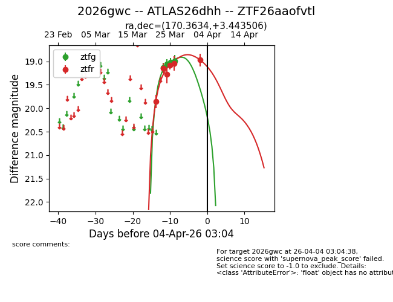
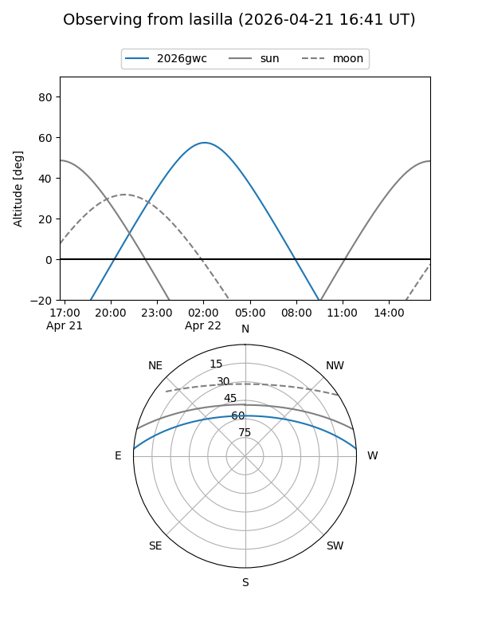
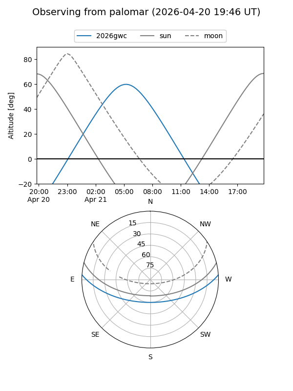
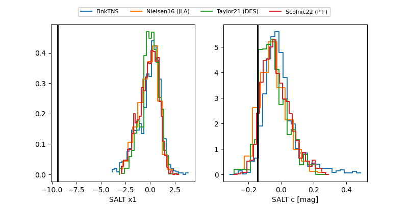

2026gwc
Target 2026gwc at 2026-04-04 03:08
Aliases and brokers:
FINK: link
Lasair: link
ALeRCE: link
TNS: link
YSE: link
alt names
ZTF26aaofvtl (ztf,fink_ztf)
2026gwc (tns,yse)
ATLAS26dhh (atlas)
Coordinates:
equatorial (ra, dec) = 170.3634,+3.44351
equatorial (HMS+DMS) = 11:21:27.21,+03:26:36.62
galactic (l, b) = (256.7952,+58.01303)
Flags:
Photometry:
last ztfg=18.99, ztfr=18.97
4 ztfg, 6 ztfr detections
Lightcurve

Visibility


Additional plots
